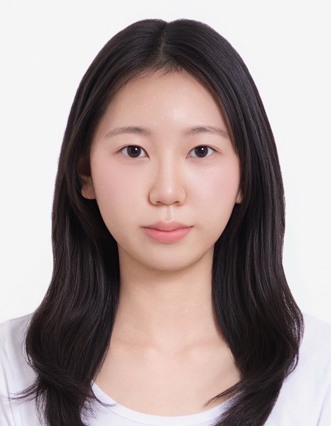

타깃에 맞춘 콘텐츠 기획
고객이 어떤 상황에서 서비스에 관심을 가질지 살펴보고, 일상에서 공감할 만한 소재를 발굴합니다.
이력서 · 자기소개서
OH YUNSEO
브랜드·콘텐츠 마케팅 / UI·UX 디자인 (신입)

시각디자인 전공을 바탕으로 Figma로 웹 UI를 설계하고, React·CSS·GSAP으로 반응형 웹과 인터랙션을 구현합니다. 현대모터스튜디오 웹사이트 리디자인 팀 프로젝트에서 메인페이지 디자인을 담당했고, 앱 디자인으로 대한민국디자인전람회에서 입선했습니다.
고객이 어떤 상황에서 서비스에 관심을 가질지 살펴보고, 일상에서 공감할 만한 소재를 발굴합니다.
팀원과 함께 ‘역사적 장소를 접할 기회가 부족하다’는 문제에서 출발해 앱 「오늘」의 기능과 화면을 구성했습니다.
스타일 가이드를 제작해 현대모터스튜디오 웹사이트의 디자인 요소를 정리했습니다.
아이디어를 바로 화면으로 만들어 공유하고, 피드백으로 고쳐 완성도를 높입니다.
전체 디자인 디테일 개선
스타일 가이드 및 발표 장표 제작
웹사이트의 시각적 완성도와 디자인 일관성 향상에 기여
20~30대의 수면 고민과 기존 수면 앱을 조사해 수면 기록·분석 서비스의 콘셉트와 기능을 기획했습니다.
캐릭터를 활용한 앱 화면을 디자인하고, 티백·캔들 등 브랜드 굿즈 목업을 제작했습니다.
팀 기획서의 내용과 구성을 최종 보완했습니다.
로라로라·무브먼트랩 등 브랜드 웹사이트를 리뉴얼했습니다.
개인 포트폴리오 웹사이트를 제작해 Vercel로 배포했습니다.
| 분야 | 보유기술 | 활용 내용 |
|---|---|---|
| UI/그래픽 디자인 | Figma · Photoshop · Illustrator · InDesign | 웹 UI 설계 및 프로토타입, 이미지 보정, 그래픽·아이콘 제작, 편집 디자인 |
| 웹 구현 경험 | HTML · CSS · JavaScript · React · Codex | HTML·CSS·JavaScript·React 기초, Codex를 활용한 화면 구현 및 수정 |
| 협업·배포 | Git · GitHub · Vercel · Codex | 브랜치·커밋·푸시 기반 팀 협업, 결과물 및 포트폴리오 배포, AI 코딩 도구(Codex)를 활용한 코드 작성·보완 |
| 기간 | 과정명 및 기관 |
|---|---|
| 2026.04.28 ~ 2026.10.23 | MBC아카데미 컴퓨터교육센터 · 챗GPT 생성형 AI를 활용한 반응형 웹콘텐츠 개발기획자 양성 |
| 기간 | 학교 및 전공 | 소재지 |
|---|---|---|
| 2023.03 ~ 2025.02 | 동양미래대학교 · 시각디자인과 | 서울 |
| 기간 | 수상 내용 | 기관 |
|---|---|---|
| 2026.06 ~ 2026.07 | 대한민국디자인전람회 입선 (2인 팀작업) · 앱 「오늘」 | 한국디자인진흥원 |
오윤서 | 웹 퍼블리셔 / UI·UX 디자이너 (신입)
시각디자인을 전공하며 브랜드, 캐릭터, 포스터 등 다양한 작업을 했습니다. 그중 앱 디자인 프로젝트에서 사용자가 원하는 기능을 편하게 쓸 수 있도록 화면을 구성하는 일에 흥미를 느꼈고, UI/UX 분야로 관심이 이어졌습니다. 또한 팀원들과 수면 관리 서비스 ‘그루잠’의 브랜드를 기획하며, 서비스의 특징을 고객이 공감할 만한 이야기로 풀어내는 데에도 관심을 갖게 됐습니다.
졸업 후에는 웹·UI/UX 디자인과 퍼블리싱을 배우며 직접 설계한 화면을 구현해 봤습니다. 이 과정에서 사용자가 어떤 정보를 먼저 보고, 원하는 기능까지 어떻게 찾아가는지 살피는 습관을 키웠습니다.
앞으로는 사용자가 필요한 정보를 쉽게 찾고 원하는 기능을 편하게 이용할 수 있도록 화면을 설계하고 싶습니다. 그 과정에서 브랜드가 전하고자 하는 메시지도 사용자가 이해하고 공감할 수 있는 콘텐츠로 풀어내겠습니다.
교육 과정 중 팀원과 함께 사회 문제를 바탕으로 공모전 주제를 정했습니다. 일상에서 역사적 장소와 사건을 자연스럽게 접할 기회가 부족하다는 점에 주목해 위치 기반 역사 탐색 앱 「오늘」을 기획하고 디자인했습니다. 사용자가 주변의 역사적 장소와 이야기를 쉽게 발견하고 감사의 마음을 기록하도록 기능과 화면을 구성했고, 대한민국디자인전람회에서 최종 입선했습니다.
현대모터스튜디오 웹사이트 리디자인 팀 프로젝트에서는 메인페이지 디자인을 담당했고, 전체 디자인 디테일 개선과 스타일 가이드, 발표 장표 제작을 맡았습니다. 프로그램 페이지는 UI 디자인과 퍼블리싱까지 진행했습니다.
대학교에서 팀원들과 수면 관리 서비스 ‘그루잠’이라는 수면케어 브랜드를 기획했습니다. 20~30대의 수면 고민과 기존 수면 앱을 조사하고, 취업 준비나 직장 생활처럼 타깃이 공감할 만한 상황을 SNS 광고 소재로 제안했습니다. 모바일 앱 화면과 목업을 제작했으며, 팀 기획서의 내용과 구성을 최종 보완했습니다.
저의 장점은 아이디어를 빠르게 화면으로 옮기는 실행력입니다. 처음부터 완벽하게 만들기보다 생각한 내용을 간단히 먼저 디자인해 보며 방향을 잡습니다. 현대모터스튜디오 팀 프로젝트에서 메인페이지 방향을 두고 고민할 때도 아이디어를 바로 화면으로 만들어 팀원들과 공유했고, 받은 피드백으로 화면 구성과 요소를 다듬었습니다. 생각을 눈으로 확인하고 고쳐 가는 방식이 작업 효율을 높인다는 것을 알게 되었습니다.
단점은 빠르게 시작하다 보니 중간에 수정할 부분이 늘어나는 경우가 있었다는 점입니다. 이를 보완하려고 디자인에 들어가기 전에 필요한 정보와 화면의 흐름을 먼저 정리합니다. 페이지별 내용과 구조를 미리 파악한 뒤 시작하면서 완성도를 높이고 있습니다. 빠른 실행력에 사전 구조 파악을 더해 완성도 있는 결과물을 만들겠습니다.
평소 관심이 있던 시각디자인을 전공으로 선택해 본격적으로 배웠습니다. 포토샵, 일러스트레이터, 인디자인 같은 프로그램은 브랜드 아이덴티티, 로고 제작, 편집 디자인 과제를 수행하며 익혔습니다. 브랜드 제작 프로젝트에서는 콘셉트 기획부터 디자인, 발표까지 전 과정에 참여했습니다.
작업하면서 교수님과 동료들의 피드백을 바탕으로 디자인을 여러 차례 수정했습니다. 그 과정에서 처음 만든 결과물에 만족하지 않고 부족한 부분을 찾아 고치는 습관이 생겼습니다.
이 습관은 디자인을 웹에서 직접 구현해 보고 싶다는 생각으로 이어졌고, MBC아카데미에서 웹·UI/UX 디자인과 퍼블리싱을 배우게 되었습니다. 새로운 기술을 배우면 직접 적용해 보고, 문제가 생기면 원인을 찾아 개선하며 해결해 왔습니다. 이러한 경험을 통해 다양한 작업에도 적극적으로 도전하고, 끝까지 완성도를 높이는 태도를 갖추게 되었습니다.
생각한 아이디어를 콘텐츠와 화면으로 만들고, 어떻게 읽히고 쓰이는지 확인하며 부족한 부분을 고치는 과정에서 보람을 느낍니다. 입사 후에는 회사의 업무 방식과 브랜드가 고객에게 전하고자 하는 메시지를 먼저 익히겠습니다. 이를 바탕으로 고객이 공감할 만한 콘텐츠를 기획하고, 관심을 가진 사람이 제품이나 서비스에 대한 정보를 쉽게 찾을 수 있도록 화면을 구성하겠습니다.
팀원들과 의견을 나누며 결과물을 다듬고, 경험이 쌓이면 고객이 어떤 콘텐츠에 반응하는지, 정보를 찾는 과정에서 어디에 어려움을 느끼는지 살펴 다음 기획과 디자인에 반영하겠습니다.